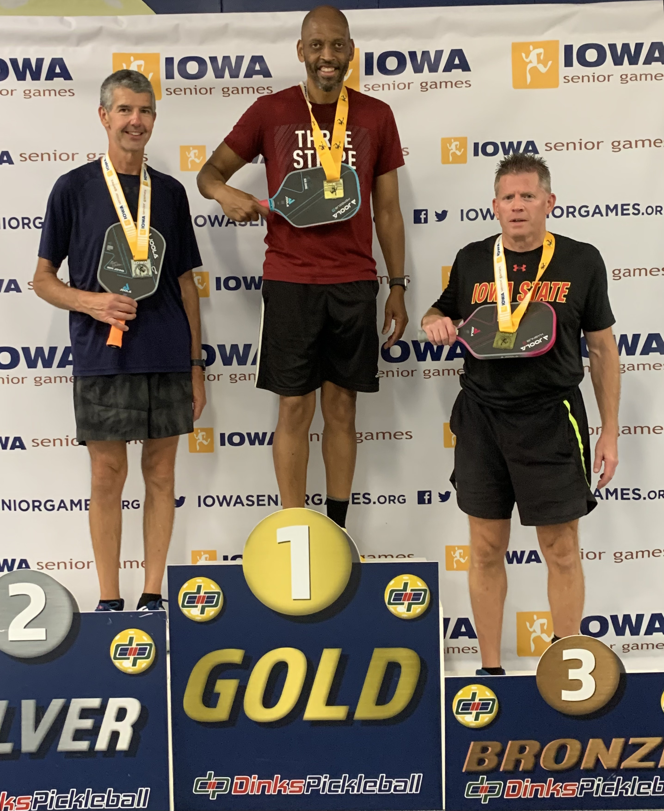

All Things Marlon
Marlon is a successful lawyer who has a deep passion for pickleball and basketball refereeing. He started his pickleball journey in 2019 with the hopes of just exercising and maybe playing against friends locally. Soon, he discovered that this sport may be one that he could take even more seriously. Fast forward two years, he has been playing in tournaments almost every month and has even traveled from Nebraska to Florida. He has placed in his age group in the pickleball nationals in Pittsburgh, where he was even able to walk on the Pittsburgh Pirates field before a game to be recognized for his spot in the tournament. This sort of work ethic doesn't just stop at pickleball. He brought that same desire to refereeing kids basketball. It started out as just a way to stay in touch with the game of basketball after he was done coaching all three of his kid's teams. He soon started to develop a real love for reffing. This propelled him into being one of the newest high school varsity refs in the state and securing him a spot reffing significant games like the state tournament.
Outside of his professional career, he has enjoyed many successes in his hobbies. As he ages, these hobbies not only serve as exercise but also as a way to make some passive income. From competing throughout the country to reffing some of the highest levels of basketball. It seems he can do pretty much anything he puts his mind to.
